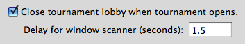

Window closing problems
Q: Sometimes BlazingStars won't close a tournament lobby when the tournament window opens or misses a popup. How can I fix this?
A: BlazingStars has to read the title of the windows that popup in order to know what actions to take, but unfortunately delays in your internet connection will sometimes lead to the title of the window not being filled in for a few seconds, confusing the program. To deal with this, the Open / Close preferences screen has a configurable option to allow you to modify the time that BlazingStars waits to read the title of the new window; if you're having trouble with BlazingStars not closing windows properly, try increasing the value in this box.

To solve window closing problems:
- Increase the window scanner delay. The default value is one second, but this can be increased in increments of 1/10th of a second up to any value you wish.
- E-mail me at support@fullyfunctionalsoftware.com if these steps do not resolve your problem.